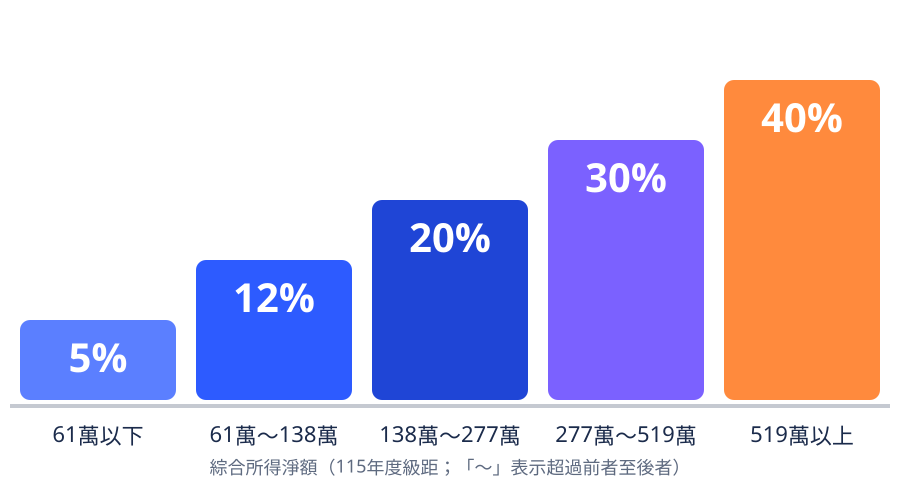

綜合所得稅與房地合一入門｜115年度版
所得稅介紹
資料基準日：115年11月24日
今天的四個問題
誰要繳、怎麼算、金額為何每年變、賣房子怎麼課
1
誰要繳？
境內居住者與非居住者
2
怎麼算？
免稅額、扣除額、累進稅率
3
金額為什麼每年變？
物價指數連動調整
4
賣房子怎麼課稅？
房地合一所得稅
所得稅介紹
第一部分
綜合所得稅
例題：183天要連續嗎？
一個課稅年度內居留合計滿183天就是居住者，不必連續
一位外籍人士在臺灣沒有住所，115年度分三次來臺，分別停留60天、70天、55天。
已滿183天，是境內居住之個人；條文寫「居留合計」，不必連續。
合計
185天
出處：所得稅法第7條第2項第2款
免稅額與扣除額（115年度）
115年度每人免稅額101,000元；未成年子女自115年度起多50%
標準扣除額和列舉扣除額二選一，特別扣除額另外再扣。
| 項目 | 115年度金額 |
|---|---|
| 免稅額（每人） | 101,000元 |
| 免稅額：年滿70歲的本人、配偶、受扶養直系尊親屬 | 151,500元（多50%） |
| 免稅額：受扶養的未成年子女（115年度起） | 多50%＊ |
| 標準扣除額（單身；有配偶者加倍） | 136,000元 |
| 薪資所得特別扣除額（每人） | 227,000元 |
＊第17條於115年9月11日修正、自115年1月1日施行；115年度公告早於修法，附表未列這一項的金額。
出處：所得稅法第17條；財政部114年11月27日公告｜適用：115年度所得（116年5月申報）
五級累進稅率
稅率5%到40%，只有超過的那一段適用較高稅率

出處：所得稅法第5條第2項；115年度級距：財政部公告
法條金額≠今年金額
法條寫的是基準；物價累計漲3%以上才調整，報稅看當年度公告
免稅額
- 法條基準：每人全年六萬元
- 115年度：101,000元
5%級距上限
- 法條基準：五十二萬元
- 115年度：610,000元
- 115年度跟113年度相比上漲4.13%，所以調整
出處：所得稅法第5條、第5條之1；115年度金額：財政部公告
第二部分
房地合一
哪些房地要適用？
105年1月1日以後取得的房地，出售時適用房地合一、分開計稅
1
105年1月1日以後取得的房屋、土地
出售時適用房地合一
2
預售屋、以設定地上權方式取得的房屋使用權
105年1月1日以後取得的也算
3
取得日原則上是完成所有權移轉登記日
不是簽約日（預售房地除外）
4
不併入綜合所得總額
分開計算、分開申報
出處：所得稅法第4條之4、第14條之4第3項
持有越久，稅率越低
境內居住者持有2年以內45%，超過10年降到15%
成交價 − 成本 − 費用 − 土地漲價總數額 ＝ 課稅餘額
| 境內居住之個人：持有期間 | 稅率 |
|---|---|
| 2年以內 | 45% |
| 超過2年，未逾5年 | 35% |
| 超過5年，未逾10年 | 20% |
| 超過10年 | 15% |
沒有費用證明時，費用按成交價額3%計算，最多30萬元。
出處：所得稅法第14條之4第1項、第3項第1款；第14條之6
自住房地的優惠
三個條件同時符合，課稅餘額400萬元以內免稅
設籍並持有居住連續滿6年
本人、配偶或未成年子女
出售前6年內
沒有出租、營業或執行業務使用
出售前6年內
本人、配偶、未成年子女沒用過這個優惠
出處：所得稅法第4條之5第1項第1款；第14條之4第3項第1款第8目
常見誤解
免稅額、稅率、申報年度、183天、賣房所得五個誤解
| 誤解 | 正確 |
|---|---|
| 免稅額是6萬元 | 6萬元是法定基準，115年度是101,000元 |
| 淨額超過61萬元，全部適用12% | 只有超過的那一段適用12% |
| 5月報的是今年的所得 | 報的是上一年度的所得 |
| 183天要連續 | 條文是「居留合計」 |
| 賣房子賺的錢併入綜所稅 | 房地合一分開計稅 |
出處：所得稅法第2條、第5條、第7條、第14條之4、第71條
資料基準日：115年11月24日
免責聲明
本內容為教學整理，資料基準日為115年11月24日，僅供學習參考，不構成個案稅務或法律意見。法規與數額可能修正，實際適用請以財政部及主管機關最新公告為準，或洽詢專業人士。